Similarity Dimension
Sierpinski Tetrahedron Photos
Here are some photos of a model Sierpinski tetrahedron constructed from envelopes in a recent summer workshop. Click each small picture for a enlargement in a separate window.
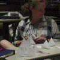
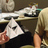
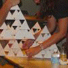
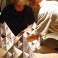
First steps
First steps
During the construction
During the construction
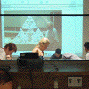
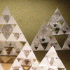
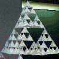
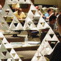
During the construction
During the construction
The model
Another view
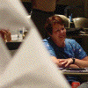
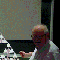
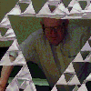
Another view
Part of the audience
A familiar face
With a sense of humor
Return to
Example Calculations (f)
.